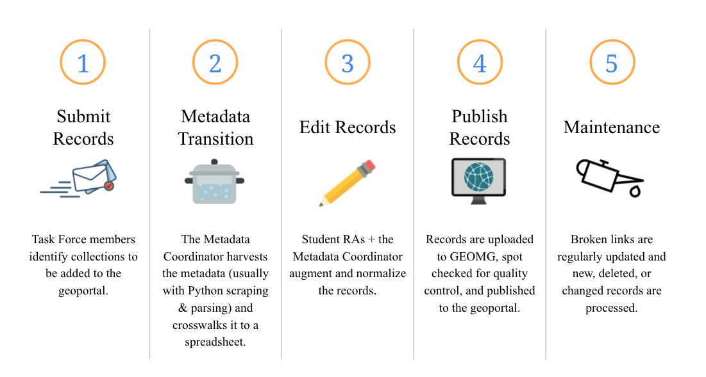

Lifecycle of BTAA Geoportal Metadata Records

1. Submit Records
Criteria for submission
-
The BTAA Geoportal holds metadata records that point to geospatial data, maps, aerial imagery, and websites hosted online by external organizations. It is the role of the Team members to seek out new content for the geoportal. Team members are responsible for finding records in their own or adjacent states. Regional or national collections will be selected by the Collections Steering Group.
-
Review the Collections Strategy and the Collections Development Policy for more details.
Places to find public domain collections
- State GIS clearinghouses
- State agencies (especially DNRs and DOTs)
- County or city GIS departments
- Library digital collections
- Research institutes
- Nonprofit organizations
How to submit new records
1. Optional: Contact the organization
- Use this template to inform the organization that we plan to include their resources in our geoportal.
- If metadata for the resources are not readily available, the organization may be able to send them to you.
2. Send an email to the Metadata Coordinator
Things to include:
- a link to the website
- Title and Description of the collection
- (If known) information about how to harvest the metadata or construct access links
3. The submission will be added to our collections processing queue
Metadata processing tasks are tracked on our public GitHub project dashboard.
Code Naming Schema
The Metadata Coordinator will assign an alphanumeric code for the collection. This code will also be added to each metadata record to facilitate administrative tasks and for grouping items by their source.
| First part of string | Contributing institution |
|---|---|
| 01 | Indiana University |
| 02 | University of Illinois Urbana-Campaign |
| 03 | University of Iowa |
| 04 | University of Maryland |
| 05 | University of Minnesota |
| 06 | Michigan State University |
| 07 | University of Michigan |
| 08 | Pennsylvania State University |
| 09 | Purdue University |
| 10 | University of Wisconsin-Madison |
| 11 | The Ohio State University |
| 12 | University of Chicago |
| 13 | University of Nebraska-Lincoln |
| 14 | Rutgers University |
| Second part of string | Type of organization hosting the datasests |
|---|---|
| a | State |
| b | County |
| c | Municipality |
| d | University |
| f | Other (ex. NGOs, Regional Groups, Collaborations) |
| g | Federal |
| Third part of string | The sequence number added in order of accession or a county FIPs code |
|---|---|
| -01 | First collection added from same institution and type of organization |
| -02 | Second collection added from same institution and type of organization |
| -55079 | County FIPS code for Milwaukee County, Wisconsin |
Example code for a collection sourced from Milwaukee County: '10b-55079'
2. Metadata Transition
This stage involves batch processing of the records, including harvesting, transformations, crosswalking information. This stage is carried out by the Metadata Coordinator, who may contact Team members for assistance.
Regardless of the method used for acquiring the metadata, it is always transformed into a spreadsheet for editing. These spreadsheets are uploaded to GEOMG Metadata Editor.
Because of the variety of platforms and standards, this process can take many forms. The Metadata Coordinator will contact Team members if they need to supply metadata directly. Here are the most common methods per resource type:
Geospatial data API Harvesting
Most data portals have APIs that can be programmatically parsed to obtain metadata for each record.
- DCAT enabled portals: ArcGIS Open Data Portals (HUB), Socrata portals, and some others share metadata in the DCAT standard. This is typically accessed by appending “/data.json” to the end of the portal’s base URL. View our harvesting scripts for DCAT enabled portals here.
- CKAN / DKAN portals: This application uses a custom metadata schema for their API. View our harvesting scripts for CKAN portals here.
HTML Parsing
If a data portal or website does not have an API, we may be able to parse the HTML pages to obtain the metadata needed to create GeoBlacklight schema records. This is done using custom View our harvesting scripts for HTML parsing here.
Individual Geospatial Metadata Standard files
Geospatial metadata standards are expressed in the XML format, which can be parsed to extract metadata needed to create GeoBlacklight schema records. The following file types are accepted for metadata extraction and can serve as Supplemental Metadata:
- ISO 19139 XML and FGDC XML files: They are parsed to extract metadata values for GeoBlacklight metadata using the project created Python scripts found in BTAA-Geospatial-Data-Project/parse-xml
- ArcGIS 1.0 Metadata XML files: These records are transformed to ISO 19139 using XSLT. They are then treated the same as the ISO as described above.
Downloading Data
Some metadata is only available as part of a zipped download of the datasets. In this case, UMN staff will use scripts to batch download the records, unzip them, and process their metadata locally.
Maps
OAI-PMH
The Open Archives Initiative Protocol for Metadata Harvesting (OAI-PMH) is a framework that can be used to harvest metadata records from enabled repositories. The records are usually available as a simple Dublin Core XML format. If the protocol is not set up to include extra fields, such as the map image's download link or bounding box, this method may not be sufficient on its own.
Spreadsheets
Administrators for university repositories for scanned maps or data can often export metadata into a spreadsheet, especially for Dublin Core. This method is preferred, because the University IT professionals and librarians can control which fields to export, and because transformations by the Metadata Coordinator are not necessary. The B1G Map Template shows all of the fields needed for GeoBlacklight.
MARC files The best way to transfer this type of metadata is to send a single file containing multiple records in the .MRC or MARC XML format. The Metadata Coordinator will use MarcEdit or XML parsing to transform the records to GeoBlacklight using the project-designated MARC to GBL crosswalk, but Team Members can specify preferences.
3. Edit Records
Once the metadata is in spreadsheet form, it is ready to be normalized and augmented. UMN Staff will add template information and use spreadsheet functions or scripts to programmatically complete the metadata records.
- The GBL Metadata Template is for creating GeoBlacklight metadata.
- Refer to the documentation for the Aardvark fields and the B1G profile fields for guidance on values and formats.
4. Publish Records
Once the editing spreadsheets are completed, UMN Staff uploads the records to GEOMG, a metadata management tool. GEOMG validates records and performs any needed field transformations. Once the records are satisfactory, they are published and available in the BTAA Geoportal.
5. Maintenance
General Maintenance All project team members are encouraged to review the geoportal records assigned to their institutions periodically to check for issues. Use the feedback form at the top of each page in the geoportal to report errors or suggestions. This submission will include the URL of the last page you were on, and it will be sent to the Metadata Coordinator.
Broken Links The geoportal will be programmatically checked for broken links on a monthly basis. Systematic errors will be fixed by UMN Staff. Some records from this report may be referred back to Team Members for investigating broken links.
Subsequent Accessions
- Portals that utilize the DCAT metadata standard will be re-accessioned monthly.
- Other GIS data portals will be periodically re-accessioned by the Metadata Coordinator at least once per year.
- Team members may be asked to review this work and provide input on decisions for problematic records.
Retired Records When an external resource has been moved, deleted, or versioned to a new access link, the original record is retired from the BTAA Geoportal. This is done by converting the Publication State of the record from 'Published' to 'Unpublished'. The record is not deleted from the database and can still be accessed via a direct link. However, it will not show up in any search queries.